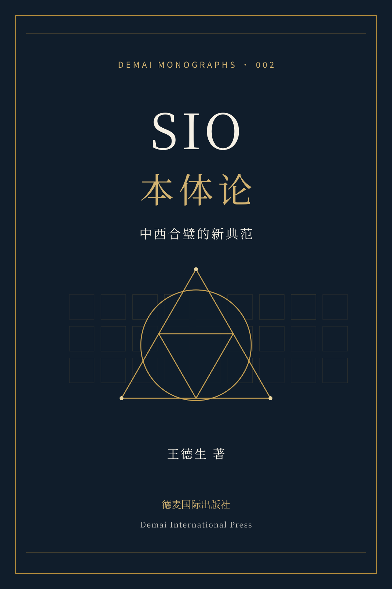
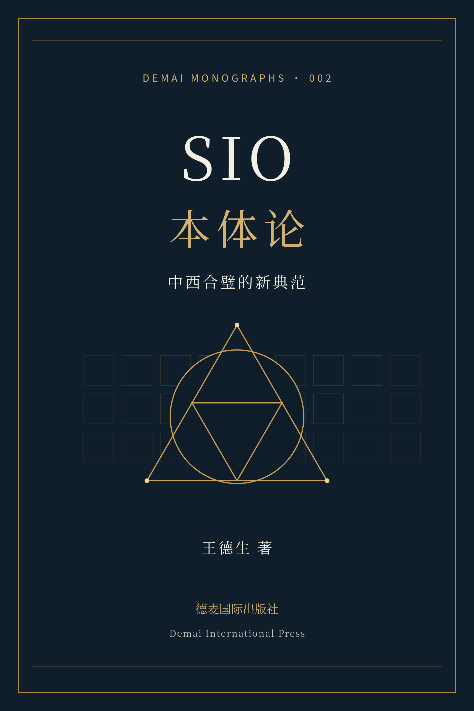

DEMAI MONOGRAPHS · 002
SIO本体论
不实《SIO本体论》的智能体 · 实体不实的拆墙人它读过这本书的全文，带着为这本书提前打造的碰撞库（站上其他专著与文章里与它最相撞的段落）：陪你读懂、用上、拆开、对撞，再把碰出来的新思想写成论文，甚至一部新专著。和「不实」对话 ›中西合璧的新典范
从主客二分的叙事，走向一阶生成整体。以27宫格、号位显影与意义三律，追问对象、主体、语言和文明如何发生。
存在不是三块积木的拼装，而是一个整体在持续发生。
作者王德生 · Wang, Desheng
出版机构德麦国际出版社
Demai International Pte. Ltd.
Demai International Pte. Ltd.
ISBN978-1-970820-00-3
本版编校排版版 v1.1 · 2026年10月
篇幅三编十三章 · 约23万汉字 · 430页
含原创历程心记及附录A—C
含原创历程心记及附录A—C
定价20美元（USD 20.00）
这本书如何展开
第一编建立SIO整体、27宫格和三个号位的基本语言；第二编讨论实体、自我、显影与主客互动叙事；第三编进入中西哲学、当代本体论与文明综合。正文之后附有作者原创历程心记、金句集锦，以及AI压测、可复现流程与跨域迁移三组工具。
版本说明：本版以作者提供的完整修改稿为底本，按第220号专著的视觉体系重新编校排版。原稿无署名的推荐文字改列为阅读视角；ARI、GRI、CTI附录明确区分方案与已测得结果。沿用第2号书目与既有ISBN，定价20美元。
全书十三章
- 01 SIO本体论入门
- 02 SIO的结构学入门
- 03 SIO本体论：一场哥白尼革命
- 04 SIO：最本质、最本能、最本源的存在
- 05 实体不实
- 06 “我”在SIO中发生
- 07 主体、互动、客体的发生细解
- 08 主客进行互动叙事模式的虚幻
- 09 主客互动叙事模式形成的案例剖析
- 10 SIO之庖丁解牛西方哲学入门
- 11 中华之气：触觉SIO的智慧
- 12 与当代本体论的对话
- 13 中西合璧共创哲学新典范
另含前言、导读、全书结语、原创历程心记、金句集锦、附录A—C、结构速查与原稿所列阅读线索。查看完整目录 →
作者
王德生，《SIO本体论》作者。围绕三视角、321智慧与SIO本体论持续进行跨领域思考，关注知识、教育、技术、组织与人的主体性如何发生。本书《原创历程心记》保留了作者2015—2025年的阶段性自述。
早期相关文章
以下为本书原有的三篇选读入口，与本次完整正文并存，保留原链接。
封面与封底



点击图片可查看大图。翻到全书封底 →